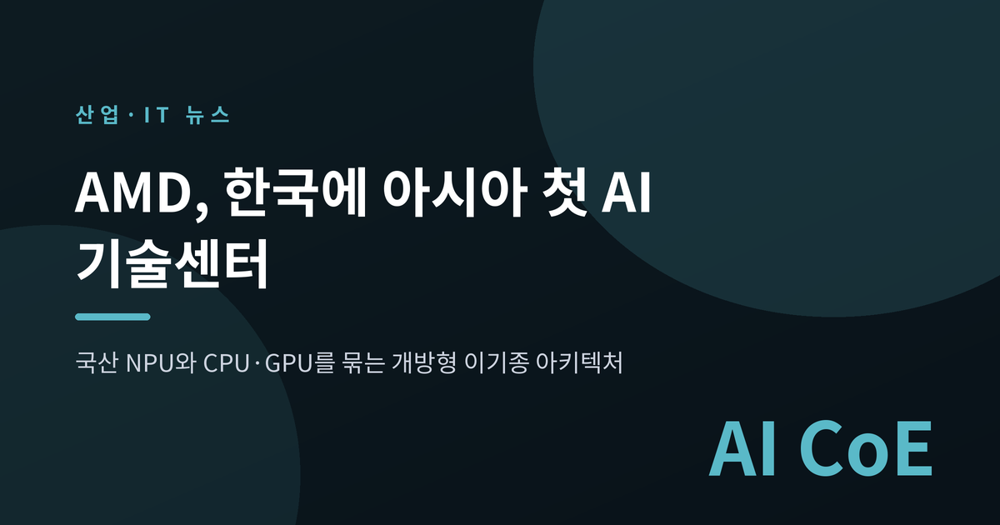
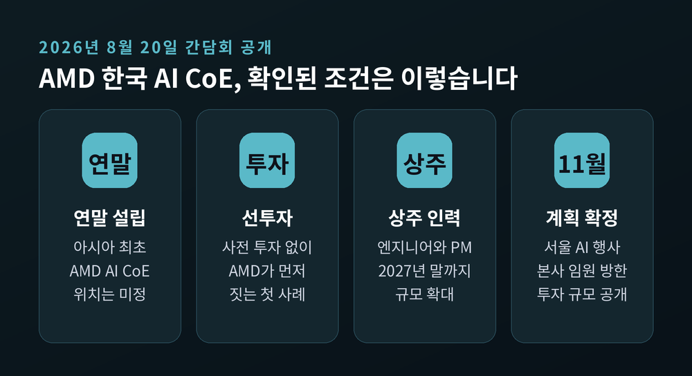
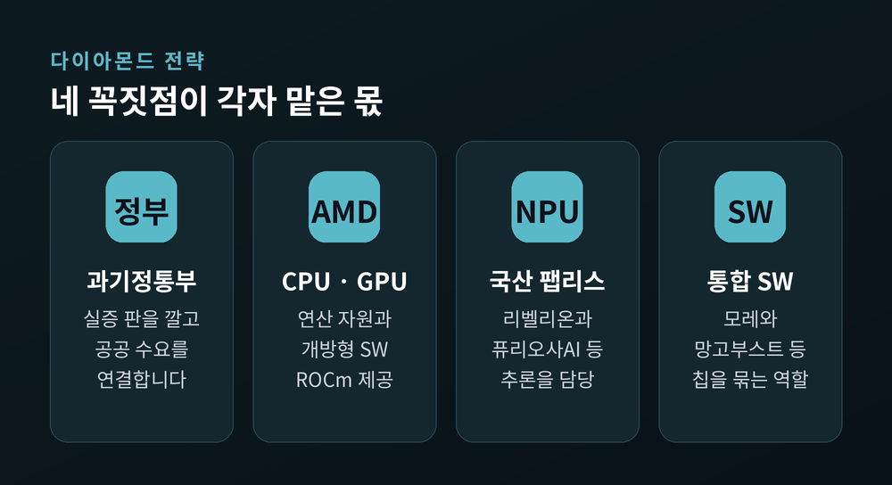
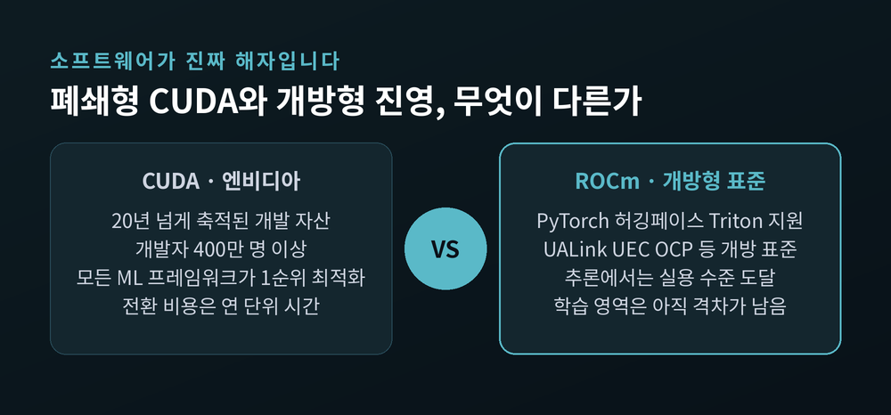
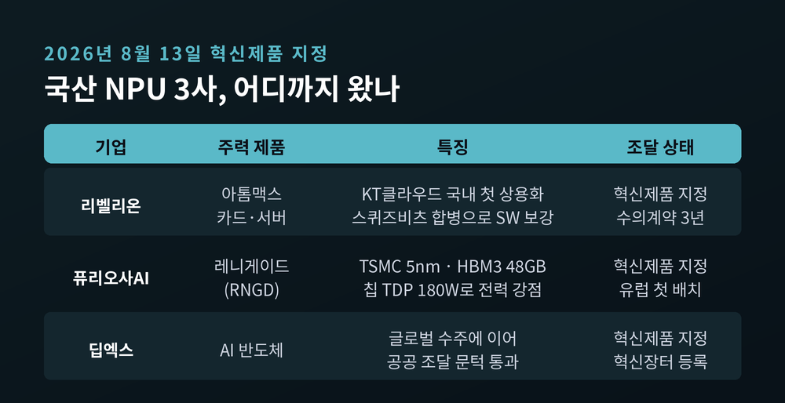
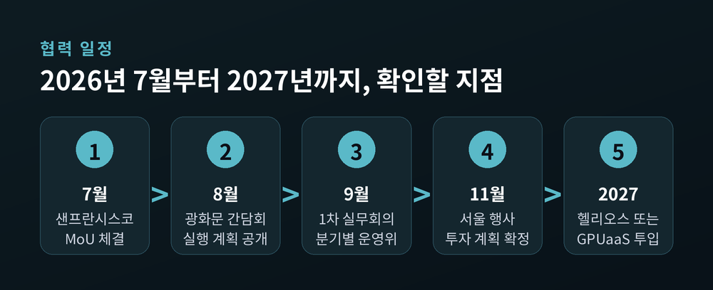

AMD 한국 AI 기술센터, 국산 NPU로 엔비디아 의존 낮출 수 있나
이번 글에서는 AMD가 한국에 세우겠다고 밝힌 AI 기술센터(AI CoE)와 그 배경에 있는 '개방형 이기종 AI 아키텍처'를 정리해 보겠습니다. 왜 지금 탈(脫)엔비디아가 화두인지, 국산 NPU가 어디까지 왔는지, 그리고 어디에 회의적인 시선이 필요한지까지 함께 살펴봅니다.

광화문에서 나온 한마디, "엔비디아 단일 종속 깬다"
2026년 8월 20일, 과학기술정보통신부가 서울 종로구 광화문 HJ비즈니스센터에서 간담회를 열었습니다.
이름은 '개방형 AI 컴퓨팅 인프라 생태계 구축을 위한 간담회'였습니다. 7월 27일 배경훈 부총리 겸 과기정통부 장관과 리사 수 AMD 회장이 미국 샌프란시스코에서 체결한 업무협약(MoU)의 후속 조치입니다.
자리에는 AMD코리아 문경선 상무를 비롯해 퓨리오사AI, 리벨리온, 딥엑스, 하이퍼엑셀, 모빌린트, 망고부스트, 모레, 노타AI, 래블업, 파두, KTNF 등 국내 AI 반도체·소프트웨어 기업 관계자가 모였습니다. NIPA와 IITP 원장도 함께했습니다.
핵심 구상은 단순합니다. AMD의 CPU·GPU와 국산 NPU를 하나의 시스템에 묶는 것. 이른바 이기종(異機種) 컴퓨팅입니다.
AMD 본사 보도자료의 표현은 더 조심스럽습니다. "한국이 단일 벤더 방식을 넘어 기술 선택권을 확대하고 AI 인프라를 다변화하려는 목표를 지원한다." 특정 회사 이름을 꺼내지는 않았습니다만, 겨냥하는 곳은 분명합니다.
AI CoE, 무엇이 다른가
문경선 상무가 밝힌 조건들을 정리하면 이렇습니다.
먼저 시점입니다. 2026년 말까지 국내에 설립합니다. 아시아 최초의 AMD AI CoE입니다.
방식이 눈에 띕니다. 선(先)투자 개념입니다. 기업이나 기관이 대규모 사전 투자를 하고 그 대가로 센터를 유치하는 통상적 구조가 아닙니다. AMD가 먼저 들어와 짓는 첫 사례라는 설명입니다.
인력은 상주 엔지니어와 PM을 배치하고, 2027년 말까지 확대합니다.
문 상무의 설명 중 가장 무게 있는 문장은 이것이었습니다. "AMD는 미국 외 특정 국가의 NPU를 포함한 이기종 아키텍처를 개발·실증하는 최초 사례로 한국을 택했다."
다만 센터 위치와 구체적 투자 규모는 아직 정해지지 않았습니다. 과기정통부와 협의해 결정합니다.

다이아몬드 전략과 2027년의 조건
협력 구조에는 '다이아몬드 전략'이라는 이름이 붙었습니다.
과기정통부, AMD, 국산 NPU 개발사, 통합 소프트웨어 기업. 이 넷이 각 꼭짓점을 맡습니다. 2027년 말까지 4대 핵심 영역을 과제로 만들어 추진한다는 계획입니다.
2027년에 관해서는 이런 발언이 나왔습니다. 최신 랙스케일 AI 통합 플랫폼인 헬리오스(Helios) 또는 GPU 서비스(GPUaaS) 형태의 컴퓨팅 자원을 투입해 공공 연구기관과 국가과학AI연구센터(NAIS) 연구를 지원하겠다는 것입니다.
여기서 '또는'을 놓치면 안 됩니다. 실물 랙이 한국에 들어온다는 확정이 아닙니다. 클라우드 형태 제공도 선택지에 열려 있습니다.
참고로 헬리오스는 AMD Instinct MI455X GPU 72장을 한 랙에 묶은 플랫폼입니다. 단일 랙에서 최대 3 AI 엑사플롭스를 냅니다. 메타의 오픈랙와이드(ORW) 규격과 OCP·UALink·UEC 표준을 따릅니다. 양산 목표는 2027년 2분기입니다.

왜 지금인가 — 학습에서 추론으로
예전의 화두는 '누가 더 큰 모델을 학습시키는가'였습니다. 지금은 '누가 더 싸게 추론을 돌리는가'로 옮겨왔습니다.
이 전환이 판을 흔들고 있습니다.
퓨리오사AI 김한준 CTO가 간담회에서 내놓은 숫자가 인상적입니다. 인류가 지금까지 생산한 AI 가속기는 약 1,900만 개, 이 중 엔비디아가 약 60%를 차지합니다. 그런데 소프트웨어 엔지니어들이 에이전트 AI를 본격 활용하면 약 4,700만 개가 필요합니다. 지식 노동자 절반이 쓰면 20배 이상이 듭니다.
전력도 문제입니다. 2030년까지 글로벌 데이터센터에 추가로 필요한 전력만 100GW 규모라고 합니다.
김 CTO의 결론은 이렇습니다. "단일 칩만으로는 감당할 수 없다."
실무적으로는 프리필(Prefill)과 디코드(Decode) 단계를, 어텐션과 피드포워드 네트워크를 쪼개 GPU와 NPU에 나눠 배치하는 방식이 거론됩니다. 하이퍼엑셀 이진원 CTO는 "AI 에이전트 워크로드에서 인간이 호출하는 건 10%고, AI가 AI를 호출하는 비율이 나머지 90%"라고 했습니다.
배경훈 부총리도 같은 맥락을 짚었습니다. "GPU만 탑재한다고 해서 끝나는 것이 아니다." CPU와 GPU, NPU, DPU를 함께 운영하고 메모리까지 관리해야 한다는 이야기입니다.
CUDA라는 20년의 해자
여기까지가 명분입니다. 문제는 실행입니다.
엔비디아의 진짜 무기는 칩이 아니라 소프트웨어입니다. CUDA는 20년 넘게 쌓인 자산이고, 개발자가 400만 명을 넘습니다. 사실상 모든 머신러닝 프레임워크가 CUDA를 1순위로 최적화합니다.
한 시장분석 매체의 표현이 정확합니다. "전환 비용은 돈이 아니라 연 단위 시간으로 측정된다."
AMD의 대안은 오픈소스 플랫폼 ROCm입니다. PyTorch와 허깅페이스, Triton을 지원하고 라마·미스트랄 같은 오픈소스 모델을 돌릴 수 있는 수준까지 왔습니다. 추론에서는 쓸 만합니다. 다만 학습 영역에서는 여전히 격차가 남아 있다는 평가입니다.
시장 점유율 추정치는 기관마다 갈립니다. 데이터센터 AI 가속기 매출 기준으로 엔비디아를 80~85%로 보는 곳도, 70~75%로 보는 곳도 있습니다. AMD는 5~7% 안팎으로 추정됩니다. 어느 쪽 숫자를 쓰든 격차는 큽니다.
모레 조강원 대표의 비유가 이 구도를 잘 요약합니다. 엔비디아가 자사 GPU 전용 다이나모(Dynamo)로 폐쇄적인 iOS 생태계를 만든다면, 개방 진영은 안드로이드를 지향한다는 것입니다. 모레는 이미 일본 고객을 대상으로 엔비디아와 AMD GPU를 결합한 통합 인프라를 상용 운영 중이라고 밝혔습니다.

국산 NPU 3사는 어디쯤 와 있나
정부 조달 쪽에서는 진전이 있었습니다.
2026년 8월 13일, 과기정통부가 경기 성남 리벨리온 본사에서 우수연구개발 혁신제품 지정서 수여식을 열었습니다. 리벨리온의 추론 전용 NPU 기반 AI 연산용 카드와 서버, 퓨리오사AI와 딥엑스의 AI 반도체가 지정을 받았습니다.
혁신제품이 되면 무엇이 달라지는가. 기본 3년간 공공기관이 수의계약으로 살 수 있습니다. 조달 기간은 60일에서 10일 이내로 줄어듭니다. 조달청이 올해 839억 원 규모로 운영하는 혁신제품 시범구매사업 대상에도 포함됩니다.
기업별 상황은 이렇습니다.
퓨리오사AI의 2세대 칩 레니게이드(RNGD)는 TSMC 5nm 공정에 HBM3 48GB를 얹었습니다. 강점은 전력입니다. 칩 TDP가 180W 수준으로, 고성능 GPU 600W와 비교됩니다. 유럽 에퀴닉스 리스본 데이터센터에 첫 해외 배치가 이뤄졌습니다.
리벨리온은 KT클라우드에 자사 NPU 아톰을 국내 최초로 상용화했습니다. SK텔레콤 에이닷 통화요약에도 적용됐습니다. 최근에는 모델 경량화 스타트업 스퀴즈비츠를 합병해 소프트웨어 역량을 안으로 들였습니다.
딥엑스는 글로벌 수주에 이어 이번 혁신제품 지정으로 공공 조달 문을 열었습니다.
주변부의 성과도 있습니다. 망고부스트는 AMD MI300·MI325·MI350 시스템에 자사 DPU 네트워크 기술을 적용해 성능을 최대 5배, GPU 효율을 25% 끌어올렸다고 발표했습니다.

냉정하게 볼 대목
좋은 소식만 있는 것은 아닙니다.
ZDNet코리아가 8월 7일 짚은 구조적 문제가 뼈아픕니다. 국내 NPU 업체가 마주한 가장 큰 벽은 '서비스 로드맵 부재'라는 것입니다.
구글, AWS, 메타 같은 하이퍼스케일러는 자사 서비스의 2~3년 뒤를 알고 있습니다. 그래서 그에 딱 맞는 맞춤형 반도체(ASIC)를 선제적으로 설계합니다. 반면 자체 서비스가 없는 팹리스는 고객의 장기 로드맵을 모릅니다. 범용 시장을 겨냥할 수밖에 없습니다.
그런데 범용 시장의 주인은 엔비디아입니다. 맞춤형에도 못 들어가고, 범용에서는 정면 승부를 해야 하는 이중 부담입니다.
소프트웨어 부담도 계속됩니다. 새 AI 모델이 나올 때마다 SDK를 갱신하고 고객을 지원해야 합니다. 칩 경쟁력은 출시 순간이 아니라 출시 이후의 지속 지원 능력에서 갈린다는 지적입니다.
김지훈 한양대 융합전자공학부 교수는 "정부 주도 사업으로 초기 레퍼런스를 확보하고 기초체력을 기른 뒤, 실제 서비스와 연계되는 다음 단계를 모색해야 한다"고 했습니다.
공급망도 취약합니다. KTNF 이중연 대표는 "NPU를 올리려면 서버가 있어야 하고 그 밑에는 메인보드와 펌웨어가 있어야 한다"며, 국내에서 서버 메인보드를 개발하는 곳이 사실상 자사뿐이라고 말했습니다.
메모리 사정도 순탄치 않습니다. 모건스탠리는 2026년 3분기 DDR4 가격이 50% 오르고 4분기에 10% 이상 더 오를 것으로 봤습니다. 제조사들이 HBM과 서버 D램에 생산 능력을 몰아주면서 레거시 D램이 굶는 구조입니다. 다만 BofA와 트렌드포스는 상승률이 상반기를 정점으로 둔화될 것으로 보고 있어, 전망은 엇갈립니다.
국산 NPU 양산에도 HBM 확보가 병목이 될 수 있는 대목입니다.
앞으로 확인할 일정
가까운 이정표는 두 개입니다.
2026년 9월 말 — 과기정통부와 AMD의 1차 온라인 실무 회의가 열립니다. 이후 분기별 실무 운영위원회가 가동됩니다.
2026년 11월 초 — 서울에서 '어드밴싱 AI 코리아' 행사가 열립니다. AMD 본사 수석부사장이 방한해 세부 투자 계획을 확정할 예정입니다. AI CoE의 위치와 투자 규모가 이때 드러날 가능성이 큽니다.
그 밖에 과기정통부 지정 10개 AI 대학원을 대상으로 한 교육 프로그램 확장도 예고됐습니다.
솔직히 말해, 지금 나온 것들 상당수는 아직 계획입니다. AMD 공식 자료의 문장도 대부분 "계획한다", "검토한다"로 끝납니다. 헬리오스도 '또는 GPUaaS'로 열려 있습니다.

정리하면 이렇습니다.
이번 발표의 실질은 '엔비디아를 대체한다'가 아니라 '선택지를 하나 더 만든다'에 가깝습니다. CUDA 생태계는 20년 넘게 쌓인 것이고, 몇 년 안에 무너질 성질의 것이 아닙니다. 국산 NPU 역시 칩을 만드는 단계를 겨우 넘어 실제 서비스에 붙이는 단계로 들어서는 중입니다.
그럼에도 의미는 있습니다. 미국 밖 국가의 NPU를 끼운 이기종 아키텍처를 글로벌 기업이 함께 실증하겠다고 나선 첫 사례이기 때문입니다. 레퍼런스가 없으면 다음 계약도 없습니다.
11월에 나올 세부 계획이 이 협약의 무게를 결정할 것입니다.
성공할 것이냐고 물으신다면, 아직은 지켜볼 일이라고 답하겠습니다. 다만 판이 하나로 굳어지는 것보다는, 둘 이상으로 갈라지는 편이 우리에게 유리하다는 점만은 분명해 보입니다.
※ 이 글은 공개된 보도와 공식 발표를 정리한 해설이며, 특정 종목에 대한 투자 권유가 아닙니다. 언급된 기업명은 사실 관계 설명을 위한 것입니다.